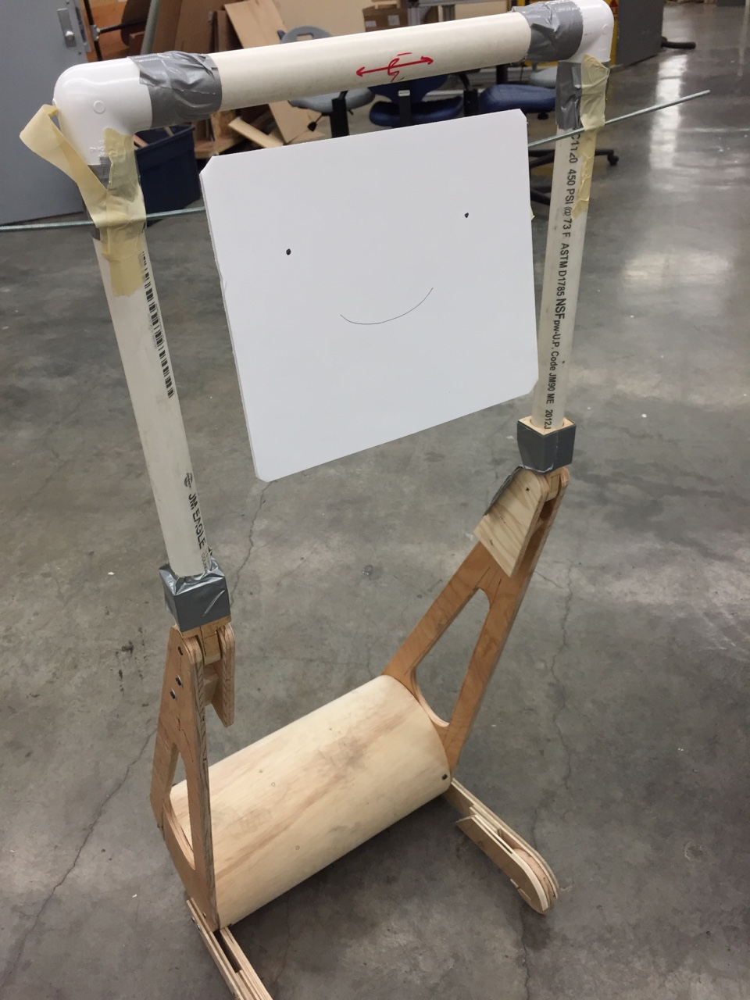

user experience, industrial design, mechanical engineering
final renderings
the robot in it's "autonomous" and "assistant" modes
ergonomics of the walkerbot
an iPad slides into the frame for ease of integration
a person engages with a care provider in the "autonomous" mode
Goal:
Design a robot that can help the elderly stay independent for longer.
This collaborative project was done with Barbara Yang (many images here credit to her), Karthik Desingh, Diane Schulze, Xiyao Xu, and Zhiqiang Sui. We challenged ourselves to create a robot that could help the elderly stay independent for longer. The robot we designed and prototyped accomplishes that goal by doing two things: help remind the person to accomplish activities of daily living, and serve as a communication tool (connecting them to doctors and loved ones).
We started out by going to st.Elizabeth's home, where we interviewed elderly people for insights. Full .pdf of insights here.
Next, we set off prototyping, first with a rough plywood/bandsawed iteration, and then with a more complex lasercut one that was closer to the final ergonomics.

After honing in on the form and ergonomics, Barbara modeled the final design for presentation purposes.